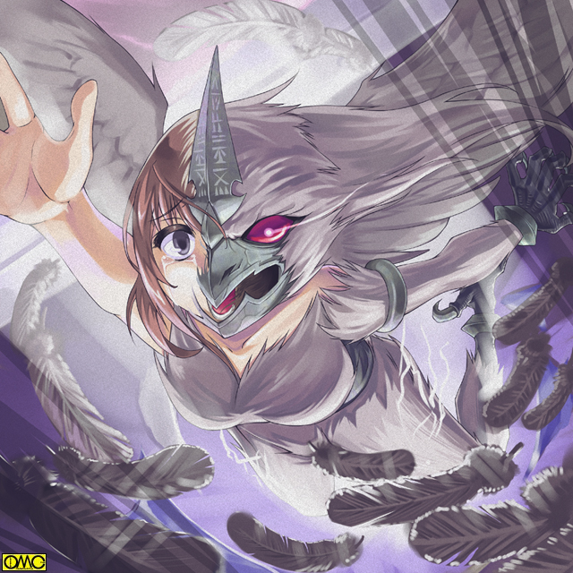

セーラたちが去り、友紀が家の中に入る。
その様子を窺っていた軽部。そして魂だけのルコ。
（この感情は……嫉妬か？ 面白いな。この娘。小僧とセーラが同一人物とは知らないらしい。小僧を愛すれば愛するほど、セーラに対する嫉妬が高まる。それを殺意に、そして力に変えてくれる）
（ならばルコ。意識の共有はまずいな。あの娘が高岩清良がセーラと知ればその気持ちも薄れる）
（ふっ。太古より私の役目はクイーンの守護と同時に、敵から味方を守りに駆けつけること。今回はセーラになったときだけ目覚めればよいな）
それだけ言うとルコは人には見えないが『光る玉』となって野川家に。
家の人間が誰もいない。
父は会社のゴルフ。母も買い物のようだ。話し相手がいない。
面白くない感情を抱いて二階にある自分の部屋に戻る。
扉を閉めて制服を脱ごうとして違和感。何かがいる。
なんとなく床を見て『ひっ』小さな声を上げる。
そこには半透明の怪人が。鳥の頭を持ち、全身が羽毛で覆われている。
鋭いくちばし。爪。その腕を組み、半身だけを床から出していた。
コミュニケーションをとるため、あえて人に近い姿をとった。
（お前の望みを言え。それをかなえてやろう）
戦乙女セーラ
ＥＰＩＳＯＤＥ２０「嫉妬」
自分の目を疑う友紀。
それはそうだ。もっとも安全であるはずの自宅の自室。
そこにこんな奇怪な存在がいたのだ。白昼夢と考えても不思議はない。
（ふふふ。それは差し詰めあの男を取り戻したいというところかな）
「なっ！？」
直前までそれを意識していたのだ。すぐに思いが行く。
「何よあんた？ どうしてそれを？」
こんな鳥女と普通に会話を交わしている。既にルコの術中にはまった証だ。
（わかるさ。顔に書いてある。あの男が欲しい。あの女が邪魔だと）
「あの女」。ルコがさすのはもちろんセーラ。そして友紀が思い描くのは「１年の女子」
「だからなんなのよ！？ そんなの清良が選ぶことだし！」
自然と口調がきつくなる。イライラがピークに達しつつある。
もちろんルコは意図して負の感情を高めている。
（簡単なことだ）
さらっとルコが言う。こんな胡散臭い相手の言葉に聞き入る友紀。
（消してしまえよ。できないというなら、私が力になろう）
「バカなこといわないで！」
消してしまえ。これが何を意味するかは誰だってわかる。
（いいのかな？ 放っておけば愛しい男はあの娘に身も心も奪われるぞ。お前は惨めな敗北者になる）
「奪われる……」
幼なじみとの想い出が蘇える。小さい頃は清良の「お嫁さんになる」と言ったこともあった。
もちろん深い意味などわかっていなかった。しかし言葉にはしていた。
いつか離れ離れになるなんてことは考えもしなかった。
その幼なじみが遠くなる。
知らない女の元に行ってしまう。
二人で手を取り、笑みを交わし、歩いていく。
自分は一人取り残される。
そんなことを考えたら無性に寂しさが募ってきた。そして
（あの娘さえいなければ）
はっきりと嫉妬を自覚した。
（今だ！）
その刹那にルコは友紀の中へと飛び込んだ。
「はぁっ」
全身が痙攣したようになる友紀。のけぞって、そしてがっくりと頭をたれる。
やがてその顔を上げる。優しい目つきが鋭くなっていた。釣りあがっている。
それがやがて猛禽類を思わせる目つきに。
突き出した唇が硬質化し、嘴を形成する。
顔。腕。脚などむき出しの部分に無数の羽毛が。
背中が盛り上がったかと思うと、制服を突き破って大きな翼が出現する。
手足すべての指が鳥のようなそれに。
（た…助けて！）
自我の消え行く恐怖。変わって行く恐怖にわずかに残る人の部分である右目から涙が。
これまた侵食の進んでいない右手を救いを求めるように上へと延ばす。

このイラストはＯＭＣによって作成されました。
クリエイターのていくあうとさんに感謝！
そんな人としての思いを吹き飛ばすべくルコは
「はぁっ」
気合を入れると制服。下着などがすべて吹き飛ぶ。そして一気にハヤブサの化物へ。
隠れていた部分も羽毛で覆われている。
胸元の一部だけ人の肌のままだ。
「ははははっ。私はふたたび肉体を得たぞ」
アマッドネス特有のくぐもった声。しかしどこか友紀に似た甲高い声でルコ……ファルコンアマッドネスは復活宣言をする。
その頃のセーラたちは２駅となりのデパートにいた。
気に入ったものがなくてここまで来ていた。
感知できる範囲を超えてしまい、友紀がアマッドネスとなったことを知り損ねていた。
ファルコンアマッドネスは窓を開けると、跳躍。そして大きな翼を広げてあっと言う間に高い空に消えて行った。
あまりの速さに誰も目撃できてない。
そしてハヤブサの特徴を持つ女は、新しい肉体の具合を見るべく高速で大空を駆け巡った。
空を行く鳥たちは自分たちと同類のような、地を行く人のような存在に戸惑い、逃げるのみだ。
しかしただ一羽。厳密には生命体ではない存在がその魔物を認識していた。
（大変だぜぇ。なんだか強そうなアマッドネスが出やがったぜ）
主に対してとてもそうは思えぬ口調で報告する「作られたカラス」
ジャンパースカートの制服をまとった少女。メガネと三つ編みお下げが印象的だ。
その手には奇妙にもピンクと黒に塗り分けられた「弓」が。
デザインも奇妙で、まるでオートマチックとリボルバーの拳銃。そのグリップを真っ直ぐにしてジョイントさせたようなデザインだ。
（ハヤブサのアマッドネス？ 相手が鳥なら私の出番かしら）
その彼女と距離を置いた先には鳩の能力を持つピジョンアマッドネスが横たわっていた。
「く…くそ…」
全身に弾痕。まさに蜂の巣であった。
「あら。いけない。ウォーレン。それは後で聞くわ」
まるで電話を切るように通話をきる。
そして「弓」を構える。弦は張られていないが、光る線が見える。
「矢｣も光で出来ているようだ。
狙いを定めて振り絞り、そして放つ。
虫の息だったピジョンアマッドネスの眉間に命中。
「ぐぎゃああああっ」
それがとどめとなって爆発四散。浄化され残されたのは全裸の女。
「ふう。とどめを刺し忘れるなんてうっかりしてたわ」
おっとりとしているもののどこか毒気のある。そんな印象の口調であった。
彼女の名はジャンス。射抜く戦乙女。最初に蘇えった少女だ。
「ふはははは。風が心地よい。冷たく暗い土の下にくらべて、やはり空は良い」
肉体を得たルコは心のままに飛んでいた。
納得したのか元の部屋に戻る。
その際にも目撃をされないほどのスピードだ。
それでいながら減速無しに瞬時に停止できる。
友紀の部屋で翼をすぼめ、ふわりと着地する。
「ふふふ。現代の言葉に関する情報だけはもらった」
「ミュスアシの末裔」たちとコミュニケーションをとる上で必要だ。
「後はセーラが戦いの場に来るのを待つだけだ。それまでまた眠るとしよう」
その目を閉じると翼が引っ込み、そして嘴も引っ込み唇に戻る。
全身を覆う羽毛が潮が引くように消えていき、少女の白い肢体があらわに。
指が元に戻ると同時に、吹っ飛んだ衣類がビデオの逆再生のように体にまといつき、元の姿に戻る。
そしてそのまま床の上に倒れこむ。
「くしゅん」
可愛らしいくしゃみで友紀は目を覚ました。その目は優しいものに戻っている。
「あれ？ あたし何してたんだっけ？……やだ！ 制服のまま寝ちゃった。皺になっちゃうじゃない」
普通の少女の反応。何も覚えていない。
当然だ。その出会いが記憶にあれば自分がルコと肉体を共有していることに考えが及ぶ。
だから記憶を改ざんした。
月曜日。
二人で登校する清良と友紀。
「なんだ？ 妙に疲れた顔しているが」
「うーん。なんか昨日から調子悪いのよね。ところで清良。あんたは今朝は何でごねていたの」
「い……良いだろ」
まさか自分から家族にばらしたあげく、デパートで女刑事と妹に遊ばれていたとは口が裂けてもいえない。
家族相手に隠さなくてよくなったのは良いが、事情をすっかり理解した母に
「学校行かないなら今日は買い物に付き合ってくれる？ これ着て」
と、フリフリのワンピースを出されたので逃げてきたのだ。
夕方。
とある公園。
子連れの主婦たちがたむろしている。子供たちを遊ばせておき、自分たちは井戸端会議だ。
犬を連れているものもいる。
そこにひとりの男が現れた。
何日も風呂に入っていない汚い肌。服もボロボロ。
目つきだけがぎらつき、ふらふらと入ってくる。いわゆるホームレスだ。
主婦たちは露骨に眉をしかめる。公共の場であるのに、不法侵入者を見るような目つきだ。
「ああ。腹へったなぁ……」
きわめて普通の発言ではある。
「犬って、美味いかな」
こうなると普通ではない。
犬も何かにおびえたようにホームレスに吠え続けている。
「うるさいな」
ホームレス。鳴海星一は瞬時に犬のそばに接近する。
つかまえると異形へと変化する。
それはヒトデ。五つの触手が両手両足。そして頭部に当たっていた。
捕まえた犬を腹部に運ぶシースターアマッドネス。
犬がどんどんと吸収されていく。食われているのだ。
「ひぃぃぃっ」「きゃあああっ」
主婦たちは子供を連れて我先に逃げ出した。
「出やがった！」
思わずつぶやく清良。
「え？ 何が」
放課後の学校。今日は部活がない日。一緒に下校すべく待ち合わせていた友紀。
「悪い。一人で帰ってくれ」
「ちょっと！？ 何よ清良」
抗議する友紀に謝り清良は走っていく。
「セーラ様！」
この頃になると学校そばで待機するようになったキャロルである。
「いくぞ」
「はい」
瞬時にバイクモードに転じたキャロルにまたがり、清良は走っていく。
飢えを満たす。それが意識を占めているシースターアマッドネス。
「生餌」を求めて野良犬や野良猫を探していたのだ。だから動き自体はそんなに迅速ではない。
人々が逃げて無人の町を我が物顔で歩く。
その前に駆けつけた清良が立ちはだかる。
もちろんキャロルが薫子に連絡しているのではあるが、彼女とて暇ではない。
たまたま別件で動いていたため対処が遅れた。
今のところ薫子だけを通じて警察のバックアップを受けている。
ましてやセーラも薫子も知らないが、上層部にはアマッドネスの大幹部。スネークアマッドネス。ガラ将軍こと三田村がいる。
彼が操作しているため、警察は後手に回るケースが多い。
薫子が別件に駆り出されていたのも三田村の策略である。
要するに今回は援軍が期待できない。
「なんだぁ。お前。人間は食いたいとは思わんぞ」
アマッドネスが人を襲うのは勢力拡大が目的である。
彼女たちの信条として「男は無価値」というのがある。
だから排除と同時に自分たちの仲間にすべく女の肉体に作り変える。
ただし例外として子孫繁栄のための「子種の提供者」がいる。これまた一種の奴隷。
捕らえられたが最後。子種を提供するタメだけに生き永らえることに。
「食事優先でまだ人には手を出してないか。だが野放しにはできねーぜ」
清良は右手を天に、左手を地に向けた。右手に赤い、左手に青いガントレットが出現。
それをゆっくりと水平に。
腋にひきつけ、両腕を思い切り突き出す。
「変身！」
スパークするとそこにはセーラー服をまとった小柄な美少女がいた。
「セ…セーラ！？」
明らかに恐怖しているシースターアマッドネス。
「？ コイツとは初対面のはずだが？」
「ミュスアシ侵攻の際に私はお前に殺されたのだ。またやる気か？」
「ミュスアシ？」
「私たちのいたかつての都市の名前です。セーラ様」
「じゃコイツは……そのときの記憶があるってこと？」
「どうやら」
だから恐怖している。先手必勝とばかりにジャンプする。そして五体を手裏剣に見立てて高速回転して突っ込んでいく。
翼を持つアマッドネスなら警戒するパターンの攻撃だが、まさかヒトデタイプでこう来るとは読めずまともに食らうセーラ。
防御形態のエンジェルフォームだから耐えられた。
だがセーラはあえてキャストオフした。
運動性能が格段に向上した体操着姿。ヴァルキリアフォームで攻撃に転じた。
「もう一度食らえ」
シースターアマッドネスがふたたび飛ぶが、今度は簡単にかわした。
身が軽くなったのと、二度目で見切れたからだ。
そして鈍重なシースターに対して嵐のように打撃攻撃を見舞う。
（た…助けてくれ）
一度殺されていて苦手意識のあるシースターは思わず助けを求めていた。太古の戦のように。
「！？」
ひとりで下校中の友紀の頭に電気が走る。その瞬間、彼女の意識はブラックアウトした。
既にルコの意識と切り替わっている。人気のない場所へと出る。
右手を斜め下に向けると羽根を模した短剣が。
それを曲芸のようにくるくると三度回しながら眼前にかざす。
刃の部分が光り、友紀はファルコンアマッドネスへと変身した。
「ふふふ。だいぶ馴染んできたな。一瞬で変身できるようになった。おっと。一部だけ友紀の心は残さないとな。嫉妬心。それから来る憎悪が私のエネルギーだ」
つぶやき終えると空へと。
シースターアマッドネスを圧倒するセーラの首筋に「もう一体」の来襲を告げる信号が。
（救援かよ！）
それはどんどんと強くなる。気がつくと目の前にそれはいた。
全身を覆う羽毛。鋭いくちばし。鳥そのものの目。両手両足の爪も鳥の物だ。
大きな翼を折りたたみ、セーラに対して余裕を示すがごとく一礼してみせる。
「ルコ。お前が助けに来てくれたのか？」
心底ほっとしたような声を出すシースター。
「それが任務だからな」
悪の救世主。ダークヒーロー…否。ダークヒロイン降臨。
「お前は？」
２対１で闇雲に突っ掛かるほど無鉄砲ではないセーラ。とりあえず敵を知るべく尋ねた。
「自己紹介させてもらおう。私の名はルコ。隼の力を持つものだ」
セーラの直感が告げていた。こいつは強いと。
ルコが続けた言葉はセーラの予想通りのものだった。
「セーラ。私はお前を憎むもの。そしてお前を殺すもの」
セーラは知らない。
この「強敵」が幼なじみの少女の変わり果てた姿であることを。
友紀は知らない。
この「恋敵」が幼なじみの少年のもう一つの姿であることを。
「嫉妬」が悲劇を呼んでいた。